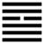

Phong Thiên Tiểu Súc (小畜 xiǎo chù)
Tự quái truyện bảo đã nhóm họp, gần vũi với nhau (tỉ) thì phải có chỗ nuôi nhau, cho nên sau quẻ Tỉ tới quẻ Tiểu súc [ 小 畜 ]
Chữ súc này có nghĩa là nuôi (như mục súc); lại có nghĩa là chứa, dùng như chữ súc tích (chứa chất), và nghĩa: ngăn lại, kiềm chế.
Thoán từ
小 畜 ． 亨 ． 密 雲 不 雨 ． 自 我 西 郊 ．
Tiểu súc: Hanh: Mật vân bất vũ, tự ngã tây giao.
Dịch: Ngăn căn nhỏ (hoặc chứa nhỏ vì chứa cũng hàm cái nghĩa ngăn, bao lại, gom lại) hanh thông. Mây kịt (chưa tan) mà không mưa ở cõi tây của ta.
Giảng: Có ba cách giảng theo tượng của quẻ:
- Quẻ Càn (cương kiện) ở dưới quẻ Tốn (nhu thuận) có nghĩa là âm (Tốn) ngăn cản được dương (Càn), nhỏ ngăn cản được lớn.
- Hoặc: Gió (Tốn) bay trên trời (Càn) còn xa mặt đất, sức ngăn cản của nó còn nhỏ, cho nên gọi là Tiểu súc.
- Xét các hào thì hào 4 là âm nhu đắc vị; hào này quan trọng nhất trong quẻ (do luật: chúng dĩ quả vi chủ) ngăn cản được 5 hào dương, bắt phải nghe theo nó, cho nên gọi là Tiểu súc (nhỏ ngăn được lớn).
Ngăn được hào 2 và hào 5 đều dương cương thì việc chắc sẽ hanh thông. Nhưng vì nó nhỏ mà sức ngăn cản nhỏ, nên chưa phát triển hết được, như đám mây đóng kịt ở phương Tây mà chưa tan, chưa mưa được. Theo Phan bội Châu, chữ “ngã” (ta) ở đây trỏ Tốn, mà Tốn là âm, thuộc về phương Tây. Nhưng theo Hậu Thiên bát quái thì tốn là Đông Nam.
Chu Hi cho rằng chữ “ngã” đó là Văn Vương tự xưng. Khi viết thoán từ này, Văn Vương ở trong ngục Dữu Lý, mà “cõi tây của ta” tức cõi Kỳ Châu, ở phương Tây của Văn Vương.
Đại Tượng truyện khuyên người quân tử ở trong hoàn cảnh quẻ này (sức còn nhỏ) nên trau dồi, tài văn chương (ý văn đức) chẳng hạn viết lách, chứ đừng hoạt động chính trị.
Ý nghĩa các hào :
1. 初 九 : 復 自 道, 何 其 咎 ? 吉 ．
Sơ cửu: Phục tự đạo, hà kỳ cữu? Cát.
Dịch: Hào 1, dương : trở về đạo lý của mình, có lỗi gì đâu? Tốt.
Giảng: hào này là dương cương lại ở trong nội quái Càn, có tài, có chí tiến lên, nhưng vì ở trong quẻ Tiểu Súc, nên bị hào 4, ứng với nó ngăn cản. Nó đành phải quay trở lại, không tiến nữa, hợp với đạo tùy thời, như vậy không có lỗi gì cả.
2. 九 二 : 牽 復, 吉 ．
Cửu nhị: khiên phục, cát.
Dịch: Hào 2, dương. Dắt nhau trở lại đạo lý thì tốt.
Giảng: hào này với hào 5 là bạn đồng chí hướng: cùng dương cương, cùng đắc trung, cùng muốn tiến cả, nhưng cùng bị hào 4 âm ngăn cản, nên cùng dắt nhau trở lại cái đạo trung, không để mất cái đức của mình.
3. 九 三 : 輿 說 輻, 夫 妻 反 目 ．
Cửu tam: Dư thoát bức, phu thê phản mục.
Dịch: Hào 3, dương : Xe rớt mất trục; vợ chồng hục hặc với nhau.
Giảng: Hào 3 quá cương (vì thể vị đều là dương ) mà bất trung, hăng tiến lên lắm, nhưng bị hào 4 ở trên ngăn chặn, nên tiến không được, như chiếc xe rớt mất trục. Hào này ở sát hào 4, dương ở sát âm, mà không phải là ứng của hào 4, như một cặp vợ chồng hục hặc với nhau. Lỗi ở hào 3 vì không biết tùy thời, không nhớ mình ở trong thời Tiểu súc mà nhịn vợ.
4. 六 四 : 有 孚, 血 去, 惕 出 ． 无 咎 ．
Lục tứ: hữu phu, huyết khứ, dịch xuất, vô cữu.
Dịch: Hào 4, âm: nhờ có lòng chí thành, nên thương tích được lành, hết lo sợ, mà không có lỗi.
Giảng: hào này là âm, nhu thuận mà đối với các hào dương thì khó tránh được xung đột, có thể lưu huyết và lo sợ, nhưng nó đắc chính (âm ở ngôi âm), ở gần hào 5 là thân với bậc chí tôn, lại ở vào thời Tiểu súc, có hào 1 ứng hợp với nó, hào 2 cùng giúp nó, nên nó tránh được lưu huyết, lo sợ, không có lỗi.
Tiểu tượng truyện Giảng: hết lo sợ, nhờ hào trên ( hào 5) giúp đỡ nó.
5. 九 五 : 有 孚, 攣 如 ． 富 以 其 鄰 ．
Cửu ngũ: Hữu phu, luyên như, phú dĩ kỳ lân.
Dịch: Hào 5, dương. Có lòng thành tín, ràng buộc dắt dìu (cả bầy hào dương ), nhiều tài đức, cảm hóa được láng giềng.
Giảng: hào này ở ngôi chí tôn, có uy tín, làm lãnh tụ các hào dương khác; nó trung chính, tức có lòng thành tín, kéo các hào dương kia theo no, mà giúp đở hào âm 4 ở cạnh nó, ảnh hưởng tới 4, sai khiến được 4, khiến cho 4 làm được nhiệm vụ ở thời Tiểu súc.
Chữ [ 攣 ] có người đọc là luyến và giảng là có lòng quyến luyến.
6. 上 九 : 既 雨, 既 處, 尚 德 載 ． 婦 貞 厲 ． 月 幾 望, 君 子 征 凶 ．
Thượng cửu: Ký vũ, ký xử, thượng đức tái.
Phụ trinh lệ. Nguyệt cơ vọng, quân tử chinh hung.
Dịch: Hào trên cùng, dương: Đã mưa rồi, yên rồi, đức nhu tốn của 4 đã đầy (ngăn được đàn ông rồi), vợ mà cứ một mực (trinh) ngăn hoài chồng thì nguy (lệ) đấy. Trăng sắp đến đêm rằm (cực thịnh), người quân tử (không thận trọng, phòng bị) vội tiến hành thì xấu.
Giảng: Đây đã tới bước cuối cùng của quẻ tốn mà cũng là bước cuối cùng của quẻ Tiểu súc. Hào 4 đã thành công đến cực điểm, các hào dương hòa hợp với nó cả rồi, như đám mây kịt đã trút nước, mọi sự đã yên. Tới đó, hãy nên ngưng đi, cứ một mực ngăn chặn các hào dương thì sẽ bị họa đấy. Mà các hào dương (quân tử ) cũng nên lo đề phòng trước đi vì sắp tới lúc âm cực thịnh (trăng rằm) rồi đấy. Âm có nghĩa là tiểu nhân.